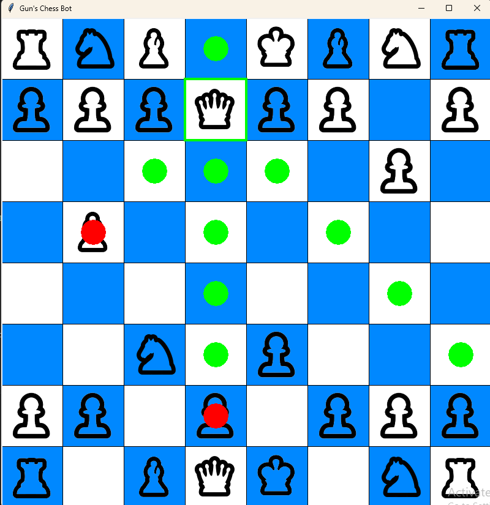

This was my first major project and I'm really happy with how it turned out. I advise using the internet to help you out (not AI though). It has 5 sections which are doable (the sixth and final section includes something irl). Be warned that since I made it for me and my friends it has some pretty random stuff including things from games and music. It took me a few months to make as I didn't have much experience with html, js or css at the time.
Go to the website to view in full screen
Backspace Beta is a movie website that uses the Vidking API. I started this project to learn how to use APIs and had relatively low experience with html, js or css. It was very useful in helping me work with APIs and later helped me when I needed to make an API. The website looks pretty bad because I spent very little time on the css as functionality was my only focus. You should use an adblocker whilst using the website on a desktop / laptop. I don't recommend trying to watch on a phone as there are lots of ads which open page when you touch the screen. I tried to remove ads by using sandbox (with allow-scripts) however the API needed sandbox to run. I also tried to remap window.open() however it did not work. I'm not 100% certain if it still works as it has been a while since I made it and the API might have stopped working. Was fun to make though.
Go to the actual website to be able to watch in fullscreen

I am currently making a chess bot. As of writing this I have drawn the board, added most legality (but nothing about checks and checkmates), movement, captures, circles to show where you can move and make sure the correct colour plays. I am using the tkinter library to help me make this. To store the board I use bitboards as they are much more effective than storing in an array (as I learnt in this amazing video).
My next goals:
Go to the stardance page to see the latest features.